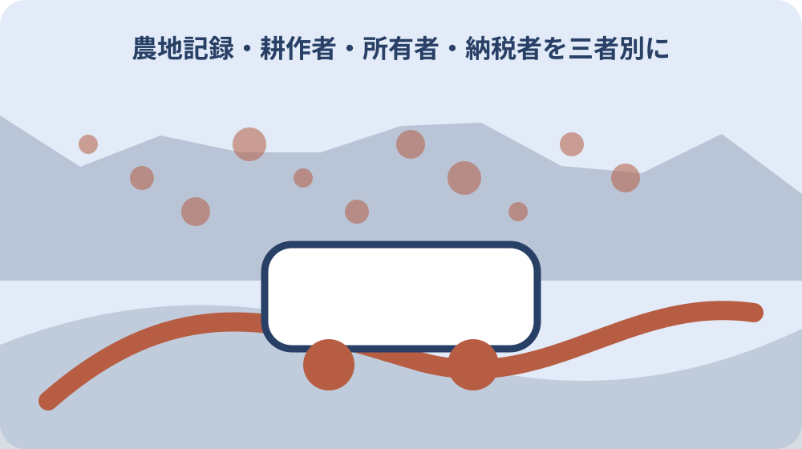

先に結論を確認する
この記事の答え：必ずしも同じではありません。耕作者は実際に農地を使う人、所有者は登記等で確認する権利者、固定資産税の納税義務者は原則として1月1日時点の所有者です。三つの欄を分けて確認します。
森町で最初に照合する条件：地番ごとに耕作者、契約上の貸主、登記または課税台帳上の所有者、1月1日時点の納税義務者を別欄へ記録する。
一筆の農地に四つの役割欄を作る
農地の話では、畑へ出ている人を所有者と思い込みやすく、納税通知書を受け取る人を唯一の権利者と思いやすいものです。最初の一覧は地番を一行とし、耕作者、貸主または売主、登記等の所有者、1月1日時点の納税義務者を四つの欄へ分けます。
森町公式は耕作目的の売買・貸借と固定資産税を別の案内で説明しています。これは制度の入口が異なるという公的事実です。四者が常に異なるという意味ではありません。同じ人なら同じ氏名を各欄へ書き、確認した根拠資料だけは省略しません。
一覧の先頭には町名ではなく地番を置きます。通称の畑名、納税通知書の表示、登記事項、農地の現地位置が一致するかを確認し、枝番や複数筆を一つに丸めません。現地写真には撮影日と方向を付け、写真だけで境界を確定したようには扱いません。
公的資料から確定できるのは制度上の基準です。誰が実際に耕しているか、無償の使用か、口約束があるかは個別確認です。この記事では前者を事実、後者を確認課題として分け、空欄を推測で埋めない記録方法を提案します。
耕作者は現地利用と契約の両方から確認する
耕作者欄には、作物、耕作開始時期、利用頻度、本人の連絡先、契約の有無を記します。近隣の人が草刈りをしているだけなら耕作者と即断せず、誰の依頼で何をしているかを確認します。作業者、管理者、借主を一つの呼び方にまとめないことが大切です。
契約書がある場合は賃貸借か使用貸借か、対象地番、期間、賃料、返還条件、更新条項を読みます。契約名だけで現在も有効と判断せず、開始日と満了日を時系列へ置きます。森町公式は契約方法によって満了後の扱いが異なる旨を案内しています。
口頭の了解しか見つからない場合は、直ちに無権限と断定するのではなく、当事者双方の認識を別々に記録します。ただし、新たな売買や貸借を口約束だけで進めてよいという意味ではありません。必要な許可等を受けない権利移動は無効になるとの町の説明を起点にします。
水路、進入路、農機の保管、畦畔の草刈りは耕作と切り離せない実務です。担当者と費用負担を別欄へ置くと、土地だけを引き渡して管理が宙に浮く事態を避けやすくなります。公開情報で決められない地域ごとの運用は当事者と窓口へ確認します。
所有者は登記事項と相続経過で確かめる
所有者欄は納税通知書の宛名だけで埋めず、登記事項証明書など権利関係を示す資料で確かめます。森町の固定資産税案内も、土地について登記簿または土地課税台帳等に所有者として登記または登録された人を納税義務者の基準として説明しています。
登記名義人が亡くなっている場合は、相続人代表者へ税の書類が届くことと、相続登記が完了していることを同一視しません。死亡日、遺産分割の状況、代表者指定届、相続登記の受付や完了を別行にし、分からない点は税務と登記の相談先を分けます。
共有名義では持分の多い人や通知を受ける代表者だけを所有者一覧に残すと、他の共有者が見えなくなります。登記事項に記録された共有者と持分を写し、連絡可否や意向は別欄へ置きます。連絡が取れないことを権利がないことへ置き換えません。
固定資産資料の地積と現況の耕作範囲が違って見えても、その場でどちらかを修正しません。資料の作成目的と基準日が違う可能性があります。公図、登記事項、農地台帳、現地状況を並べ、境界や面積の専門判断が必要なら土地家屋調査士等へつなぎます。

1月1日の納税義務者を固定資産資料で分ける
森町公式によれば、固定資産税は1月1日の賦課期日現在で土地、家屋、償却資産を所有する人が納める税です。農地を誰が耕したかや、年の途中で誰へ引き渡したかとは別の基準です。記録表には対象年度と1月1日時点の名義を必ず添えます。
年の途中で売買したとき、当事者間で税相当額を精算する合意があっても、それを町が定める納税義務者と混ぜません。公的な課税関係と私的な精算は二つの書類束に分け、契約書の記載は司法書士や税の専門家へ個別に確認します。
共有土地の固定資産税は連帯納税義務となり、共有者ごとに分けて課税できないと町は説明しています。代表者に通知が来ることは単独所有の証明ではありません。通知書の送付先、実際の支払担当、法的な共有者を三つの欄へ分けます。
納税通知書が見当たらない場合も、税がない、土地がない、所有権がないと断定しません。免税点、送付先、代表者、住所変更など別の理由があり得ます。個別の課税内容は本人確認資料を準備し、森町税務担当へ照会する事項として残します。
2025年4月1日前後の貸借経路を混ぜない
森町公式は、従来の利用権設定等促進事業と農地利用集積円滑化事業が2025年3月31日で終了し、翌4月1日から農地バンク事業へ手続が一本化されたと案内しています。日付は新規手続の経路を見分ける基準として記録します。
一本化という表現を、すべての旧契約が同日に消滅したという意味に広げてはいけません。町は2025年4月1日以降も期間が残る従来契約は満了まで有効としています。契約ごとに設定日、満了日、根拠書類を確かめます。
また、町は農地法第3条による貸借制度が残るとも明記しています。したがって、2025年4月1日以降の貸借は農地バンクしか選べない、とこの記事から断定はできません。誰が何の目的で借りるかを示し、農業委員会事務局へ経路を確認します。
古い申請書や案内を保管する場合は廃棄せず、「現在の新規申請には未確認」と印を付けます。過去の契約根拠を説明する資料として必要になる一方、最新版と混ぜると誤用を招きます。ファイル名に制度名、対象地番、確認日を入れます。
農地法第3条の許可前に契約を既成事実にしない
森町公式は、農地法第3条による耕作目的の権利移動について農業委員会の許可を案内しています。申請書を出した日、総会で審議された日、許可を確認した日を分け、提出だけで名義や利用権が確定したようには記録しません。
候補者が耕作を始める日や代金を支払う日は、許可手続との順序を窓口と専門家へ確認します。記事は個別契約の有効性を判定できません。地番、面積、現況、売買か貸借か、相手方、営農計画を整理してから相談するための台帳として使います。
申請書類一覧や様式は森町公式から取得し、以前保存したひな型を使い回しません。毎月の農業委員会総会で審議されるため、希望日だけで逆算せず、申請期日と不足資料の取得期間を担当窓口へ確かめます。休日や郵送日数も見込みます。
不許可や保留の可能性がある段階で、既存耕作者へ退去を迫ったり、造成や建築を約束したりしないことも重要です。耕作目的の第3条と農地以外へ使う転用は別の相談です。目的が変わったら同じ申請の延長で扱わず、窓口へ戻ります。
農地バンクを所有者と耕作者の間の経路として読む
森町公式は農地バンクを、農地所有者と耕作者の間に静岡県農業振興公社が入り、貸借契約を行う仕組みと説明しています。所有者が直接耕作者になる制度でも、申し出れば必ず借り手が決まる保証でもありません。役割の間を結ぶ経路として記録します。
相談前には貸したい地番、面積、現況、希望時期、水利、進入路、草刈り状況、既存契約を一枚へまとめます。借り手候補がいる場合も氏名だけでなく、どの農地をどの期間利用したいかを整理します。条件が不明なら未定と書き、都合のよい数字を置きません。
農地バンク経由の契約には手数料等の案内があるため、最新額と課税関係は申込直前に公式情報で確認します。この記事では変動し得る費用を将来の確定額として扱いません。賃料、手数料、振込時期、更新、返還を別々の項目へ置きます。
農林水産省のページは全国制度の入口、森町ページは町内手続の入口です。国の説明だけで森町の提出場所や日程を決めず、町の案内だけで全国制度の定義を広げません。双方の確認日を残し、個別案件は農業委員会事務局へつなぎます。
共有名義と納税通知の代表者を区別する
共有者が複数いる農地では、通知を受け取る一人、耕作へ同意した人、契約へ署名する必要がある人を分けます。森町公式の共有代表者の説明は税の通知先に関するものです。その順位だけで農地の処分権限まで決まるとは書かれていません。
家族一覧には共有者の氏名、持分、住所、連絡日、確認できた意向を置きます。「連絡済み」と「同意済み」を同じ印にしません。判断能力、代理権、相続未了など専門確認が必要な事項は、家族だけで結論を作らず司法書士や弁護士へ相談します。
税を一人が長年負担していても、それだけで所有権や耕作権が移ったと断定しません。支払記録は負担の事実として大切ですが、権利資料とは別冊にします。立替えや精算の約束があれば、その日付と当事者の認識を残します。
代表者変更届を提出する場面と、共有持分を移転する場面も別です。町の税務担当へは通知先と納付について、農業委員会へは農地の権利移動について、法務局や専門家へは登記について尋ねます。一つの回答を他制度の結論へ流用しません。
家族会議では地番ごとの未確認事項を配る
家族会議では「農地をどうするか」を最初の議題にせず、一筆ごとの四役が埋まっているかを確認します。地番、耕作者、所有者、納税義務者、契約満了日、管理担当を一覧にし、未確認欄には質問先と担当者を割り当てます。
耕作継続、貸借、売買、保全管理は選択肢として横並びにします。借り手が見つかる、売買許可が得られる、家族が管理できるという前提はまだ事実ではありません。それぞれ成立条件と期限を記し、結論を急ぐ理由と待てる期限を話します。
遠方の家族へは納税通知書の写真だけを送らず、対象年度、地番、共有の有無、写真に写っていない書類を添えます。個人番号や登記識別情報を一般の共有フォルダへ置かないよう、閲覧者と保管期間も決めます。
意見が分かれたら、希望と事実を別の色で記します。「貸したい」は希望、「契約満了日は来年3月」は資料で確認した事実です。希望を否定せず、何を確認すれば実行可能性を判断できるかへ会話を戻すと、連絡役だけが責任を背負わずに済みます。
売買・貸借を保留するときも管理担当を決める
許可や契約を待つ間も農地の管理は続きます。草刈り、水路、畦畔、鳥獣被害、農機、近隣連絡を項目ごとに分け、誰がいつ確認するかを決めます。保留を放置へ変えず、次の確認日までの最低限の管理を共有します。
現在の耕作者がいる場合は、所有者側の検討だけで作付けや収穫予定を無視しません。契約書と現場の予定を照合し、立入りや写真撮影も同意を得ます。農地は生活と仕事の現場であり、情報収集を理由に無断で入らないことが前提です。
費用表には固定資産税だけでなく、草刈り委託、農道や水路の負担、資料取得、専門相談、遠方家族の移動を分けて置きます。金額不明をゼロ円にせず、見積り先と確認期限を記します。売る案だけを有利に見せないための整理です。
災害や倒木など安全上の問題があるときは、役割表が完成するまで待ちません。危険区域へ入らず、土地の位置と見える範囲を担当機関へ伝えます。緊急対応の記録と、平常時の権利整理は別の時系列で管理します。
記録を翌年1月1日と契約満了日に更新する
農地台帳は一度作って終わりではありません。毎年1月1日は固定資産税の基準日、契約満了日は耕作関係を見直す日として予定表へ置きます。名義、住所、耕作者、作物、管理担当に変化がなかった場合も「確認済み」と日付を残します。
2025年4月1日の制度移行をまたぐ古い契約は、旧様式を捨てず満了までの根拠資料として保管します。更新する場合は新しい経路を窓口へ確認し、旧契約の延長だと自己判断しません。更新日、相談日、申請日、許可確認日を分けます。
ファイル名は地番、資料名、基準日、取得日を組み合わせます。例えば納税通知書は対象年度を、契約書は開始日と満了日を明記します。上書き保存だけにせず、変更前後を比べられる履歴を残すと次の担当者が制度変更を追えます。
記録の保管先には個人情報が含まれます。家族全員が必要な一覧と、契約書や税資料の原本画像を分け、閲覧権限を絞ります。不要な複製は削除し、原本の所在と持ち出した人を記すことで、確認のために重要書類が散らばるのを防ぎます。
大石の視点：役割を分けてから農地の将来を選ぶ
私は小さな不動産業者として、農地の相談で最初に価格を出すより、誰が耕し、誰が所有し、誰へ税の通知が届き、どの契約が生きているかを分ける方が大切だと考えます。これは私の実務上の見解であり、町が示した許可要件そのものではありません。
森町では住宅の敷地と農地が隣り合い、進入路や水路、境界、草刈りが家の管理にも影響する場面があります。ただし個別地番を見ずに地区全体へ当てはめることはできません。現地確認では道路、境界標、排水、耕作状況を記録し、推測を事実にしません。
まだ売ると決めていない家族には、実家カルテの農地欄へ四つの役割と契約満了日を記すことを勧めます。貸す、家族が耕す、管理を続ける、条件が整うまで保留する案も同じ表で比較できます。査定額は未確認事項を消してから検討しても遅くありません。
今日の一歩は、地番一つを選び、耕作者、登記等の所有者、1月1日の納税義務者、契約の有無を四行で書くことです。分からない欄が見つかれば、それが失敗ではなく次の質問です。森町の農業委員会事務局と税務担当へ質問を分けて持参します。